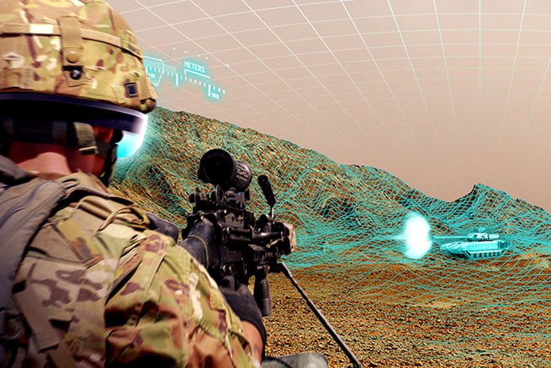

أصدرت وزارة الدفاع استراتيجيتها للذكاء الاصطناعي في فبراير ، حيث كتبت أنها تعمل من أجل "إنشاء قوة مناسبة لعصرنا".
لتسريع وتيرة الابتكار ، يعتمد البنتاغون بشكل متزايد على عقود هيئة المعاملات الأخرى (OTA) ، مما يوفر فرصًا أولية في مجال البحث والتطوير والتطوير.
"ما يسمحون لنا بالقيام به من خلال عملية OTA هو أنهم يخلقون بيئة يمكن فيها الابتكار" ، كما صرح أحد كبار مهندسي الحلول في Raytheon لـ Business Insider.
قفزت نماذج OTA الأولية من 1.4 مليار دولار إلى 3.7 مليار دولار ، مع ارتفاع عدد الجوائز من 248 إلى 618 ، بين عامي 2016 و 2018 ، حسبما كشف مكتب المساءلة الحكومي في تقرير حديث.
تتيح وزارة الدفاع لشركائها في المجال مجالا لارتكاب الأخطاء ، والاستكشاف ، والابتكار في مجال الذكاء الاصطناعي من خلال استخدام العقود غير التقليدية ، كما أوضح خبير في مجال الصناعة لبرنامج Business Insider في مقابلة أجريت معه مؤخرًا.
الذكاء الاصطناعى ليس مثل القنبلة الذرية ، لكنه عامل ثوري ، مثل الكهرباء ، ويجري استكشافه بشكل مكثف من قبل كل من الولايات المتحدة وخصومها العظماء.
الجيش الامريكي يسعى لجعل التقدم في AI ل "إنشاء تناسب القوة لعصرنا"، واستراتيجية الذكاء الاصطناعي وزارة الدفاع صدر في فبراير يقول، مضيفا "نحن لا يمكن أن تنجح وحدها."
من بين الطرق التي يتغلب بها البنتاغون على البيروقراطية التي كانت تقليديًا عائقًا أمام الابتكار السريع هي عقود هيئة المعاملات الأخرى (OTA).
تستخدم وزارة الدفاع على نحو متزايد هذا النوع من العقود ، وهي اتفاقية خاصة لمشاريع النماذج الأولية والبحث والتطوير ، لإحراز تقدم في مجالات جديدة.
بين عامي 2016 و 2018، قفز OTA النماذج من 1.4 مليار 3.7 مليار $ إلى $، مكتب (GAO) تقريرا الأخيرة محاسبة الحكومة كشف . زاد عدد عقود النماذج الأولية لـ OTA حوالي 150 بالمائة من 248 إلى 618.
بإذن من رايثيون
"ما يسمحون لنا بالقيام به من خلال عملية OTA هو أنهم يخلقون بيئة يمكن فيها الابتكار" ، كما أوضح Core Hendricks ، كبير مهندسي الحلول في Raytheon ، إلى Business Insider.
وأضاف "لا بأس بالنسبة لنا أن نقدم لهم أحدث التطورات التكنولوجية التي لم تمر بصعوبة إجراء اختبارات مكثفة" ، موضحًا أن وزارة الدفاع "سمحت لنا بتقديمهم نموذجًا أوليًا حيث قد يكون هناك زوجين من الأسلاك معلقة ، إذا أردت ، لكن يمكنهم رؤية خريطة طريق حيث يكون هذا المنتج قابلاً للتطبيق. "
وصف هندريكس أسلوب OTA بأنه "تغيير رائع" عن عملية التعاقد التقليدية ، والتي وضعت الكثير من القيود على الابتكار.
يمنح خيار التعاقد هذا ، الذي ظل موجودًا منذ عقود ولكن تم توسيعه مؤخرًا ، الصناعة مزيدًا من الحرية لمعالجة العقبات التي تعترض تطوير الذكاء الاصطناعي ، مثل الحوسبة والاتصالات.
يبحث رايثيون ، وهو مقاول دفاعي بارز ، حاليًا في استخدام الذكاء الاصطناعي والتعلم الآلي للتدريب العسكري الأمريكي ، وخاصة بيئات التدريب المحاكاة وتحليل الوقت الفعلي.
وأوضح "لقد جلبت أيضًا شركة كبيرة مثل رايثيون أقرب إلى الشركات الصغيرة". "إنها حقا تزرع ثقافة الابتكار هذه."
كشف مكتب المحاسبة الحكومي في تقريره الأخير أن 88 في المائة من عقود OTA الممنوحة منذ عام 2016 ذهبت إلى الشركات التي لم يقم البنتاغون بأعمال تجارية معها ، بما في ذلك العديد من الشركات الصغيرة.
بينما يعد الاستخدام الأكثر شمولًا لـ OTAs بمثابة تحسن ، يبقى أن نرى كيف تنوي وزارة الدفاع تجاوز مراحل الابتكار والنماذج الأولية إلى الإنتاج الضخم للتقنيات الجديدة.